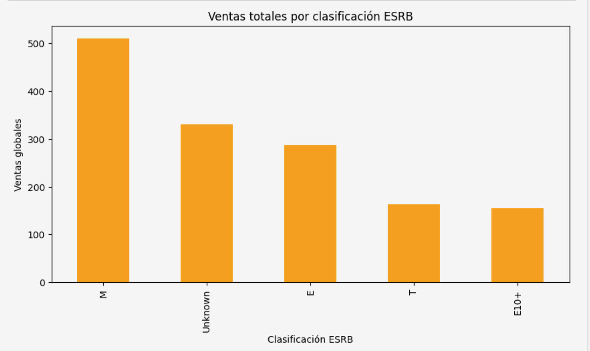

Proyectos
Chicago Taxi Demand Analysis
Contexto: análisis de demanda de taxis en Chicago y efecto del clima en los viajes.
Mi contribución: limpieza de datos, EDA en Python, consultas SQL y análisis estadístico.
Objetivo: identificar patrones de demanda y validar impacto del clima.

Conclusiones:
- La demanda varía por empresa y zona geográfica.
- El clima impacta significativamente la duración de viajes.
- Se validó estadísticamente el efecto de condiciones climáticas.
Tecnologías: Python, SQL, PostgreSQL, Pandas, Matplotlib, Seaborn, SciPy
Estadística Aplicada – Sprint 8
Contexto: análisis de hipótesis para toma de decisiones basada en datos.
Mi contribución: pruebas estadísticas, validación de hipótesis y visualización de resultados.
Objetivo: evaluar diferencias significativas entre grupos de datos.

Conclusiones:
- Se identificaron diferencias estadísticamente significativas.
- Los resultados permiten tomar decisiones basadas en evidencia.
- Se reforzó el uso de pruebas de hipótesis en análisis de negocio.
Tecnologías: Python, Hypothesis Testing, Pandas, SciPy